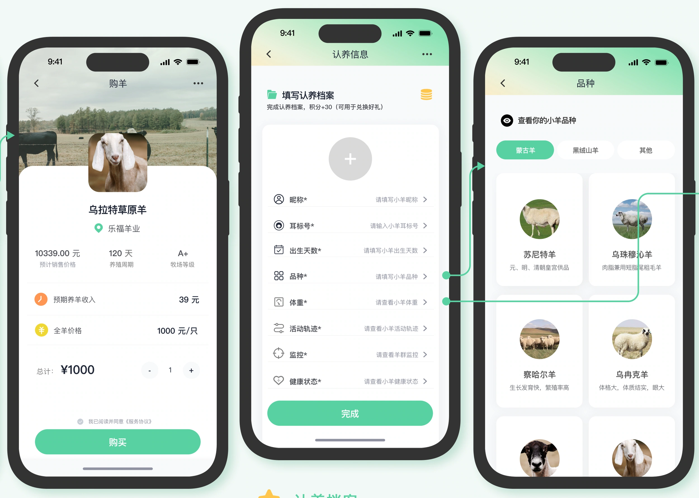
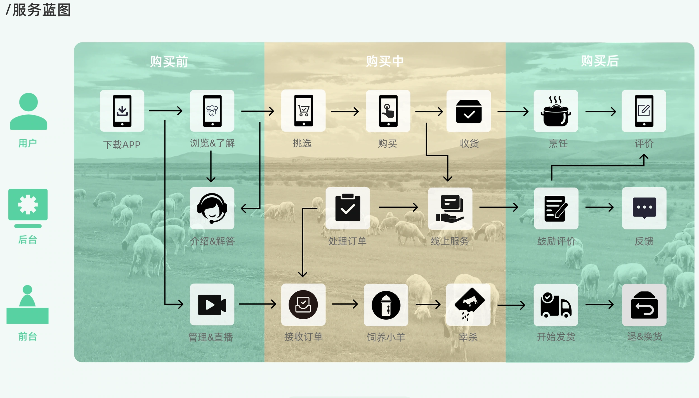
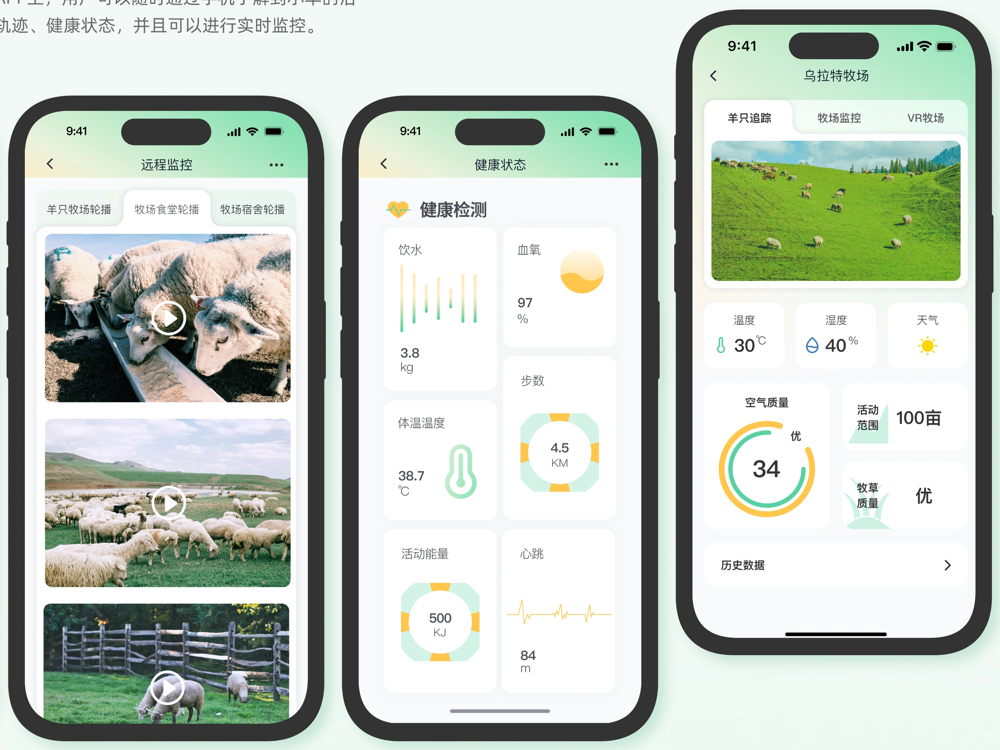

Smart Sheep Farm · Mobile app
Connecting farm services into an adoption journey
A service blueprint linked the moments before and after adoption, connecting selection, records, and day-to-day farm updates in the mobile app.

Design approach
How can we give people the information they need to decide before adoption and stay informed afterwards?
- Map service touchpointsSeparate user actions, frontstage service, and backstage support
- Design for the decisionPut comparison information on the detail pages
- Connect post-adoption stepsLet users follow farm updates through their adoption record
Map the adoption flow with a service blueprint
The smart farm brings an offline livestock service online. The blueprint maps user actions, frontstage service, and backstage support across selection, adoption, and ongoing tracking. Information needs shift along the journey. Before adoption, users need to understand the animal and service. Afterwards, they want to know how their sheep is doing.

Organise mobile information by stage
Before adoption, users can compare breeds and view details. Afterwards, the adoption record connects them to rearing progress, farm updates, and health information. The record gives returning users a clear place to start.
- A walkthrough to test the flow
- Walk through browsing breeds, opening a detail page, and finding the adoption record afterwards. Then check whether users can locate the updates they need within the record.
